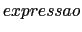

Em C, todas as expressões são avaliadas. O resultado da avaliação é um valor e pode ser usado em quaisquer lugares.
Como você já sabe, expressões usando operadores aritméticos, relacionais e lógicos1 são avaliados. O valor resultante é um número. Para os operadores relacionais e lógicos, este número pode ser 0 (que significa falso) ou 1 (que significa verdadeiro). Por exemplo:
| 3 + 5 * 4 % (2 + 8) | tem valor 3; | |
| 3 < 5 | tem valor 1; | |
| x + 1 | tem valor igual ao valor da variável x mais um; | |
| (x < 1) || (x > 4) | tem valor 1 quando o valor da variável x é fora do intervalo [1,4], e 0 quando x está dentro do intervalo. |
O formato do operador de atribuição é:
Um (do inglês ``left-hand-side value'' - valor a esquerda) é um valor que se refere a um endereço na memória do computador. Até agora, o único ``lvalue'' válido visto no curso é o nome de uma variável. A maneira que a atribuição funciona é a seguinte: a expressão do lado direito é avaliada, e o valor é copiado para o endereço da memória associada ao ``lvalue''. O tipo do objeto do ``lvalue'' determina como o valor da  é armazenada na memória.
Expressões de atribuição, assim como expressões, têm valor. O valor de uma expressão de atribuição é dado pelo valor da expressão do lado direito do =. Por exemplo:
| x = 3 | tem valor 3; | |
| x = y+1 | tem o valor da expressão y+1. |
Como consequência do fato que atribuições serem expressões que são associadas da direita para esquerda, podemos escrever sentenças como:
i = j = k = 0;
Que, usando parênteses, é equivalente a i = (j = (k = 0)). Ou seja, primeiro o valor 0 é atribuído a k, o valor de k = 0 (que é zero) é atribuído a j e o valor de j = (k = 0) (que também é zero) é atribuído a i.
Uma característica muito peculiar de C é que expressões de atribuição podem ser usados em qualquer lugar que um valor pode ser usado. Porém você deve saber que usá-lo dentro de outros comandos produz um efeito colateral que é alterar o valor da variável na memória. Portanto, a execução de:
int quadrado, n = 2;
printf("Quadrado de %d eh menor que 50? %d \n", n, (quadrado = n * n) < 50);
causa não apenas que o valor 4 seja impresso, como a avaliação da expressão relacional dentro do printf() faz com que o número 4 seja copiado para o endereço de memória associado com a variável quadrado. Note que é necessário usar parênteses em quadrado = n * n já que = tem menor precedência que o operador relacional <.
Agora compare o exemplo anterior com o próximo, no qual o valor 4 é impresso, mas sem nenhum efeito colateral:
int quadrado, n = 2;
printf("Quadrado de %d eh menor que 50? %d \n", n, n * n < 50);
Note que agora não há necessidade de parênteses para a expressão n * n porque * tem maior precedência que o operador relacional <.
Como foi discutido em classe, estes comandos de atribuição funcionam de forma similar que o comando de atribuição. O lado esquerdo da expressão deve ser um lvalue. O valor da expressão de atribuição aritmética é igual ao valor da sentença de atribuição correspondente. Por exemplo:
x += 3 é igual a x = x + 3 e tem valor x + 3
x *= y + 1 é igual a x = x * (y + 1) e tem valor x * (y + 1)
Já que incremento e decremento são formas de atribuição, o operando deve ser um lvalue. O valor de uma expressão de incremento ou decremento depende se o operador é usado na notação PRé ou PóS fixada (x++, ++x, x--, --x). Se for pré-fixada, o valor da expressão é o novo valor após o incremento ou decremento. Se for pós-fixada, o valor da expressão é o valor antigo (antes do incremento ou decremento). Por exemplo no caso de incremento, a expressão:
x++ tem o valor de x
++x tem o valor de x + 1
Note que não importando a notação usada, o valor de x (o conteúdo do endereço de memória associada a x) será x + 1. A diferença está no valor das expressões x++ e ++x, não no valor de x (em ambos os casos o valor de x será incrementada de um).
Às vezes, problemas podem acontecer devido o fato que C não especifica a ordem de avaliação dos operadores em uma operação binária. Em outras palavras, em expressões como a + b ou a < b, não há maneira de saber se o valor de a será avaliado antes ou depois de b (pense em a e b como sendo qualquer expressão, não somente variáveis.) Qual deles será avaliado primeiro é particular de cada compilador, e diferentes compiladores em máquinas diferentes podem ter resultados diferentes. Portanto, se a avaliação de um dos operadores pode alterar o valor do outro, o resultado pode ser diferente dependendo da ordem de avaliação. Portanto, em expressões do tipo x + x++, o valor pode diferir dependendo do compilador utilizado. Isto porque não sabemos quando exatamente o incremento de x ocorre. Outros maus exemplos: y = x + x-- e x = x++. De forma geral, para evitar este problema, não utilize senteças como estas.